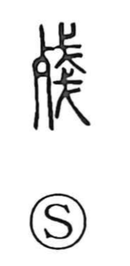

暫

Uncategorized
Kun: shibaraku, shibashi | On: zan
for a while ・ temporarily ・ brief moment
Explanation
A phono-semantic compound: 斬 provides the on reading zan and originally described cutting a felled tree into parts, piece by piece, in the fixed order used for making a vehicle. From this sense of orderly, successive progression came 漸, “to soak and become gradually wet.” With 日—the sun/day—added below to mark time, 暫 carries that notion over to the flow of time: time that passes in measured succession, hence a short while, a brief moment.